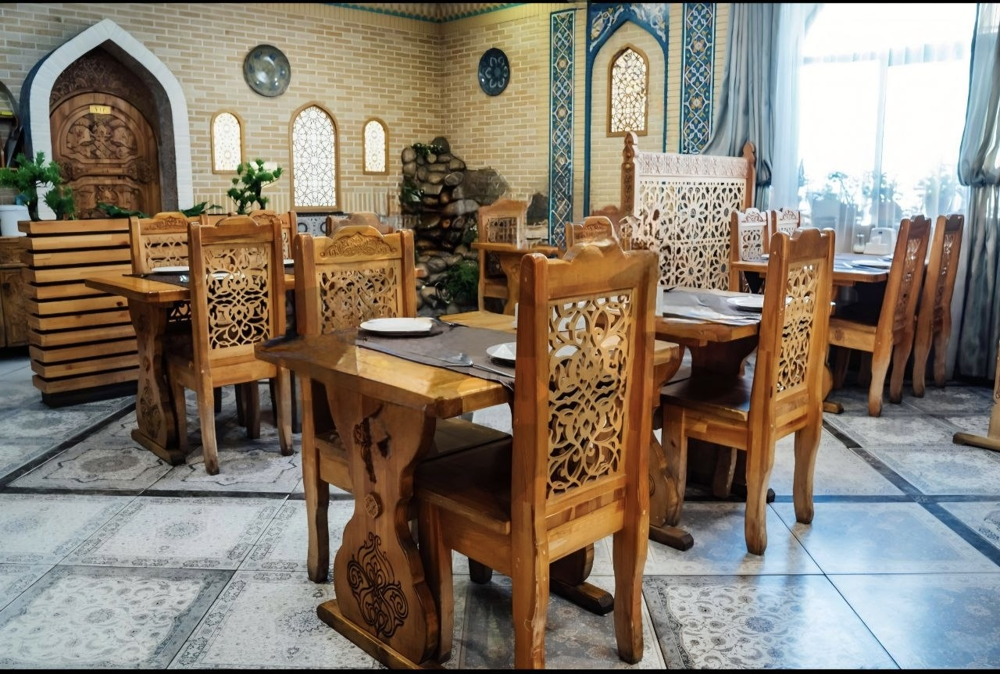
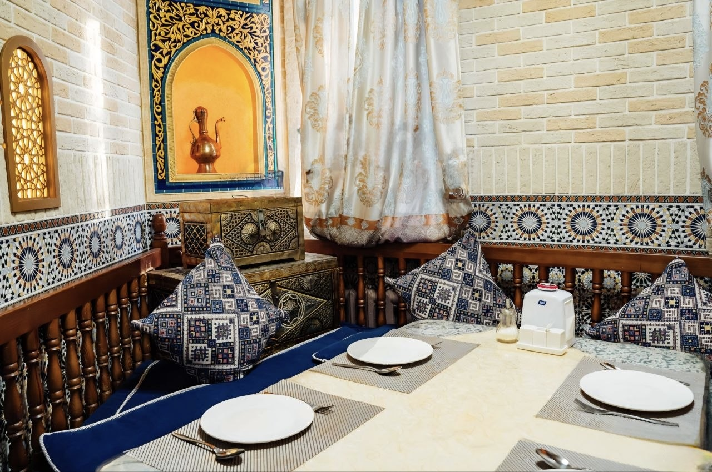
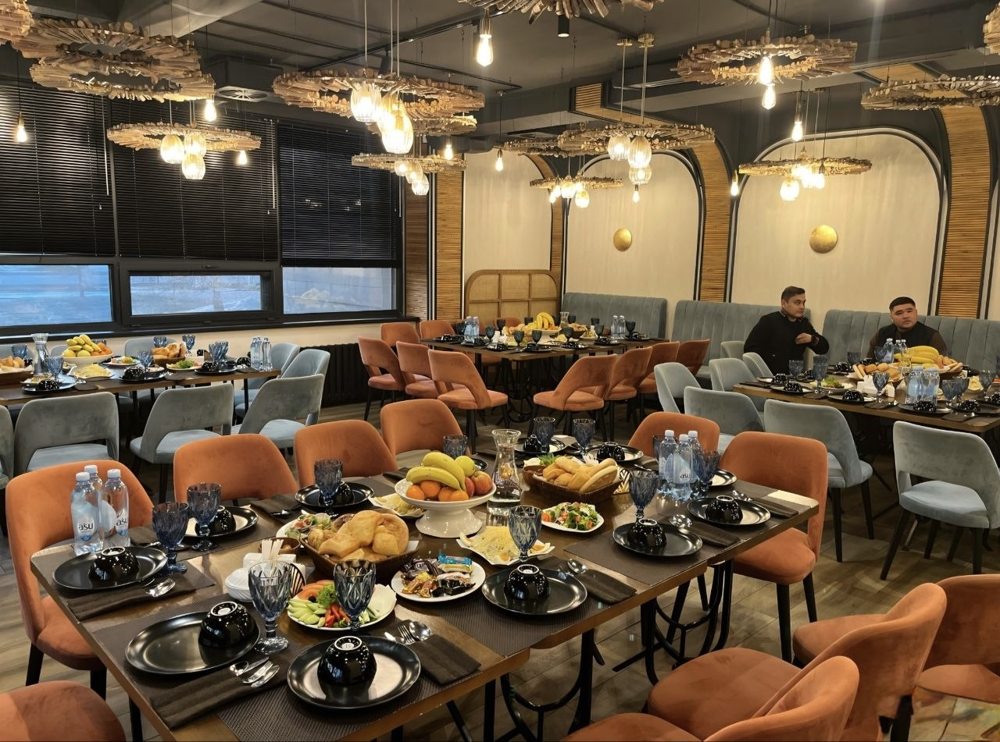

The interior of Dastarkhan is designed in a warm, traditional Kazakh and Oriental style.
Featuring rich wood, handmade tapestries, and comfortable seating, we created an atmosphere where family feasts and business meetings feel equally welcoming.
Our spacious dining halls include private VIP rooms for special occasions and main halls decorated with authentic Kazakh motifs.
Interior and Exterior Photo Gallery
Entrance to our restaurant

Main hall in an Oriental style

VIP private lounge

Other locations of our restaurant
Dish Composition & Allergen Guide
We value our guests' health and safety. Below is a detailed breakdown of ingredients and potential allergens for our most popular traditional dishes.
Composition and Allergen Analysis of Traditional Dishes
Dish Name
Main Ingredients
Potential Allergens
Calories (per 100g)
Special Lagman
Handmade wheat noodles, beef, bell peppers, garlic, house broth
Minced beef and lamb, thin dough, onion, black pepper
Gluten, onion
210 kcal
* If you have severe food allergies, please inform your waiter before placing an order.
Hall Zones
Main Dining Hall
Tables near panoramic windows
Central booths for 4–6 guests
VIP Halls
East Hall (up to 12 guests)
Khan Room (up to 20 guests)
Tea Lounge
Directions to Our Restaurant
Arrive at Dostyk Street near the central park area.
Look for the traditional illuminated Dastarkhan sign.
Free guest parking is available behind the main building.
Eastern Culinary Terms
Kazan
A large cast-iron cooking pot traditionally used across Central Asia to prepare plov and meat dishes.
Shero
A rich, highly seasoned noodle broth infused with garlic and fresh green herbs.
Quotes & Quality Notes
Our Administrator Erlan highlights: “True Kazakh hospitality starts with a hot pot of tea and fresh baursaks.”
Our team brews mineral H2O tea at temperatures over 100oC for maximum flavor.
“We designed Dastarkhan so that every visitor feels like a honored guest in a traditional Kazakh home.”
— Interview with the venue founder (date: February 12, 2026).
Chef's note: Traditional taste requires patience and zero shortcuts.